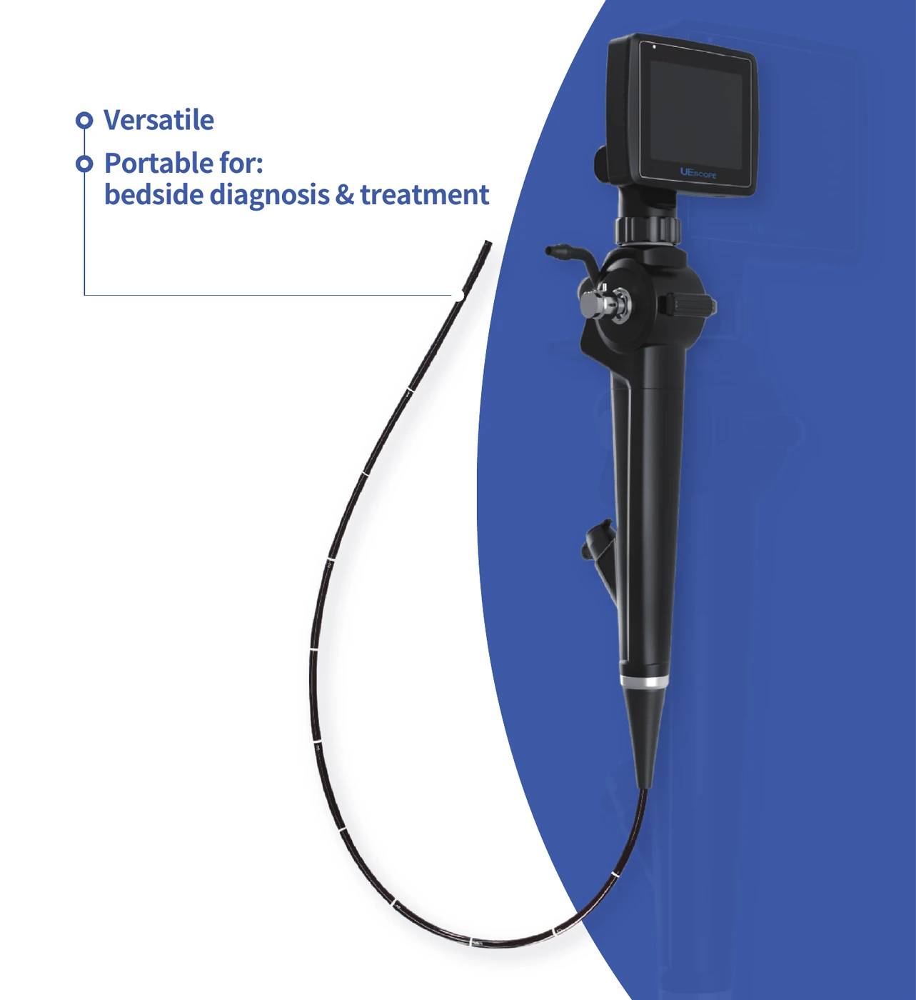
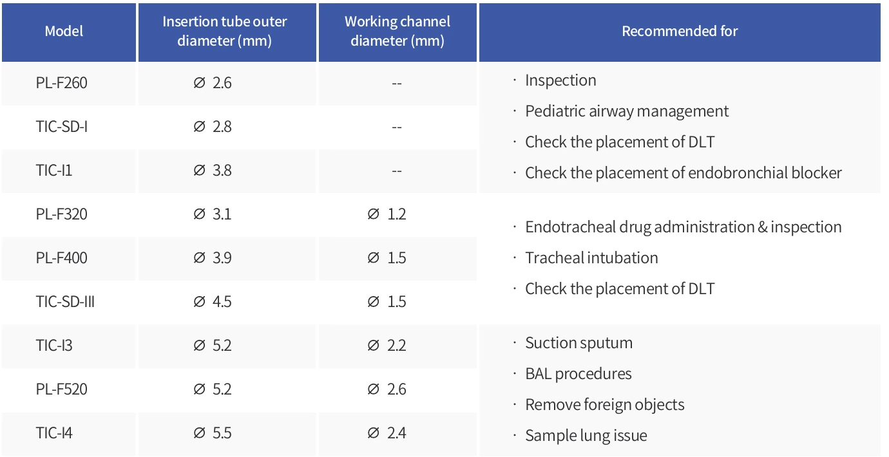

후보 상세 02 / 05 · 2026. 10. 1. 조사 기준
우선 후보 2
UE Medical TIC-SD-I(중국)
2.8 mm 삽입부와 3인치 직결 화면. DLT·bronchial blocker 용도가 제조사 자료에 명시된 후보.
- 삽입관 외경
- 2.8 mm
- 삽입 길이
- 60±2.5 cm
- 화면
- 3인치
- 흡인
- 없음
01구매 판단
02사진 자료




사진을 누르면 원본 크기로 열림. 제조사·유통사 실제 자료 사용; 정확 모델이 아닌 계열 사진은 캡션에 표시.
03공개 규격
| 항목 | 공개 사양 |
|---|---|
| 제조사·모델 |
|
| 외경 | |
| 삽입 길이 |
|
| 굴곡 | |
| 화면·연결 | |
| 무게 | |
| 흡인·채널 | |
| 전원·저장 |
04ANKOR 33Fr 적용
05모델·판본 구분
06국내 근거·연락처
- 국내 주체: 친우메드.
- 품목: 수인18-4232 — TIC-SD-I 포함, 조회 정상. 제조사 국내 품목 수인22-4474도 정상; 별도 모델 허가를 서로 대체하지 않음.[5]
- 전화: 032-710-3902.
- 이메일: info@chinoomed.com.
- 홈페이지: chinoomed.com.[12]
07참고문헌
번호는 기본 보고서와 동일. 문서 제목을 누르면 원문으로 이동.
- Insung Medical / Flexicare. VentiBronc Anchor Endobronchial Tube — Instructions for Use, USA. 07/2024.
- 식품의약품안전처. 의료기기 공개 품목·모델 검색.
- UE Medical. TIC Series UESCOPE Flexible Videoscope.
- 친우메드. UESCOPE TIC Flexible Videoscope.
- UE Medical. Product Catalog. V.02/2022.
- UE Medical. Classic Flexible Videoscope TIC.